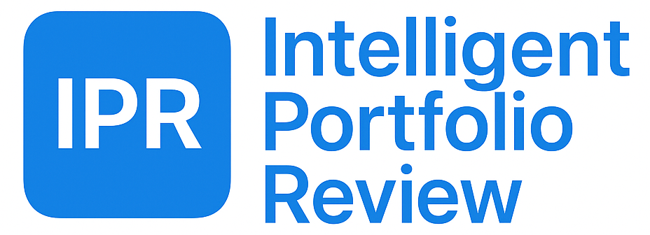
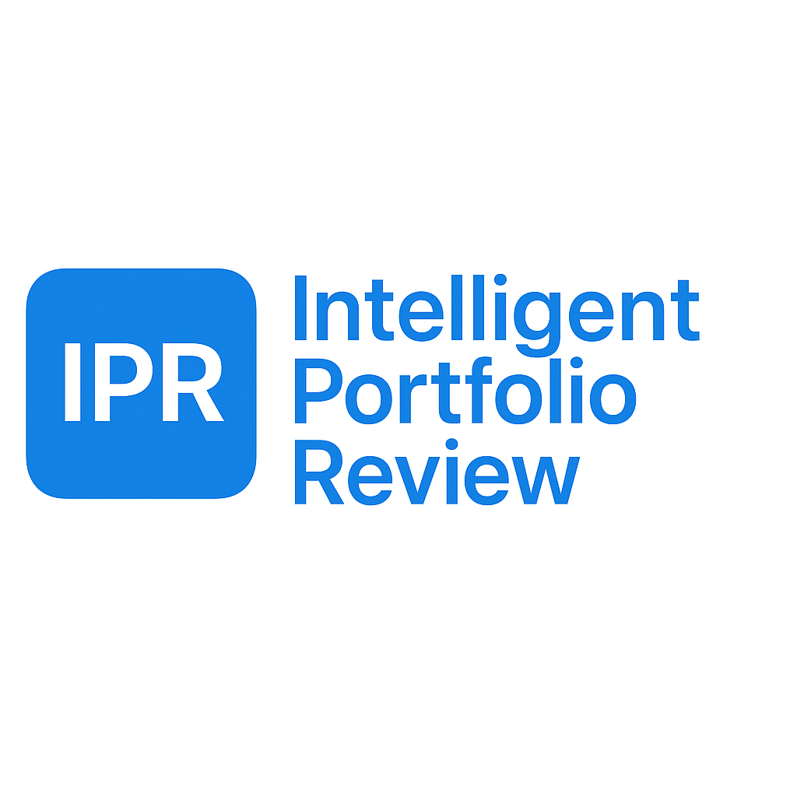

Retniw Consulting AB bedriver konsultverksamhet inom ekonomi och finans samt investeringsverksamhet avseende värdepapper och därmed förenlig verksamhet. Bolaget förbereder nu lanseringen av IPR – Intelligent Portfolio Review, ett analysverktyg utformat för att stödja förståelse av portföljstruktur och historiskt beteende.

IPR är ett utbildnings- och analysverktyg. Det ger inte investeringsråd, rekommendationer eller prognoser.
Informationen och resultaten som visas bygger på historisk data och är avsedda att stödja lärande, analys och förståelse av portföljbeteende. Alla beslut och åtgärder är användarens eget ansvar.
IPR gör det möjligt att analysera hur fonder eller tillgångsportföljer har betett sig över tid, identifiera drivkrafter bakom historisk utveckling, utforska alternativa allokeringar samt illustrera hur olika faktorer samverkar inom en portfölj – utan att ge finansiella råd.
Det analytiska konceptet bakom IPR har sitt ursprung i utvecklingen av AFU (Aktiv Förvaltnings Uppföljning) år 1995, ett ramverk framtaget för institutionell portföljuppföljning och rapportering till styrelser och långsiktiga intressenter. Vid denna tidpunkt innebar tekniska begränsningar att sådana analyser var resurskrävande och olämpliga för bärbara enheter.
Genom utvecklingen av Apples hårdvaruacceleration och moderna optimeringstekniker har detta analytiska koncept kunnat vidareutvecklas till en realtidsbaserad och interaktiv analysmiljö. I dag ersätter matematisk optimering tidigare brute-force-beräkningar, vilket möjliggör nära omedelbara analyser på modern iPad-hårdvara.
Detta gör det möjligt att genomföra portföljoptimering och faktoranalys – med samtliga lagrade dataserier tillgängliga som potentiella faktorer – på bara några sekunder. Historiska dataserier hämtas från fondförvaltare eller från offentliga databaser såsom Investing.com och Federal Reserve’s FRED.
Appen är avsedd för användning inom EU/EES. Användning eller distribution utanför EU/EES, inklusive i USA, är inte avsedd eller tillåten.
Om utvecklaren
IPR har utvecklats av en oberoende styrelseledamot och senior rådgivare med mer än 30 års erfarenhet från den institutionella investeringssektorn. Bakgrunden omfattar långvarigt ansvar inom pensionsförvaltning, tillgångsallokering och riskstyrning samt pågående styrelse- och rådgivningsuppdrag inom finansbranschen.
Projektet speglar ett långvarigt intresse för att förstå hur portföljutfall uppstår ur verkliga investeringsbeslut och hur struktur, diversifiering och faktorexponering samverkar över tid. IPR representerar en syntes av akademisk finans och praktisk portföljanalys, utvecklad som ett neutralt verktyg för utbildnings- och analysändamål.
LinkedIn-profil
📄 IPR – Integritetspolicy
Retniw Consulting AB provides consulting services in finance and economics and conducts investment activities related to securities and related operations. The company is preparing the public launch of IPR – Intelligent Portfolio Review, an analytical tool designed to support understanding of portfolio structure and historical behavior.

IPR is an educational and analytical tool. It does not provide investment advice, recommendations, or forecasts.
The information and results presented are based on historical data and are intended solely to support learning, analysis, and understanding of portfolio behavior. All decisions and actions remain the sole responsibility of the user.
IPR enables users to explore how funds or asset portfolios have behaved over time, examine drivers of historical performance, evaluate alternative allocations, and illustrate how different factors interact within a portfolio — without providing financial advice.
The analytical concept behind IPR originated in 1995 with the development of AFU (Aktiv Förvaltnings Uppföljning), a framework created to support institutional portfolio review and reporting for boards and long-term stakeholders. At the time, technical limitations made such analyses resource-intensive and unsuitable for portable devices.
Advances in Apple’s hardware acceleration and modern optimization techniques have since made it possible to evolve this analytical concept into a real-time, interactive environment. Mathematical optimization now replaces brute-force calculations, enabling near-instant analysis on modern iPad hardware.
This allows users to perform portfolio optimization and factor analysis — using all available stored data series as potential factors — within seconds. Historical data series are sourced directly from fund managers or from public databases such as Investing.com and the Federal Reserve’s FRED.
This app is intended for use within the EU/EEA. Use or distribution outside the EU/EEA, including the United States, is not intended or permitted.
About the developer
IPR was developed by an independent board professional and senior advisor with more than 30 years of experience in the institutional investment sector. The background includes long-term responsibility within pension management, asset allocation, and risk governance, as well as ongoing board and advisory roles within the financial industry.
The project reflects a long-standing interest in understanding how portfolio outcomes emerge from real investment decisions and how structure, diversification, and factor exposure interact over time. IPR represents a synthesis of academic finance and practical portfolio analysis, developed as a neutral tool for educational and analytical use.
LinkedIn profile
📄 IPR – Privacy Policy